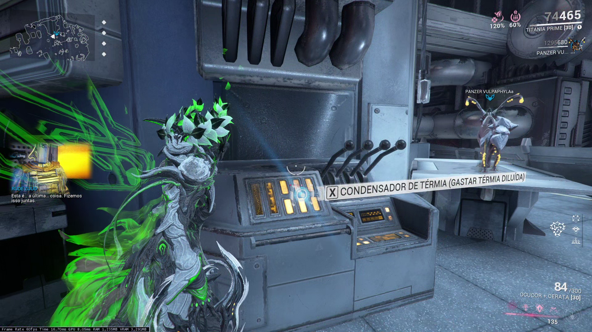
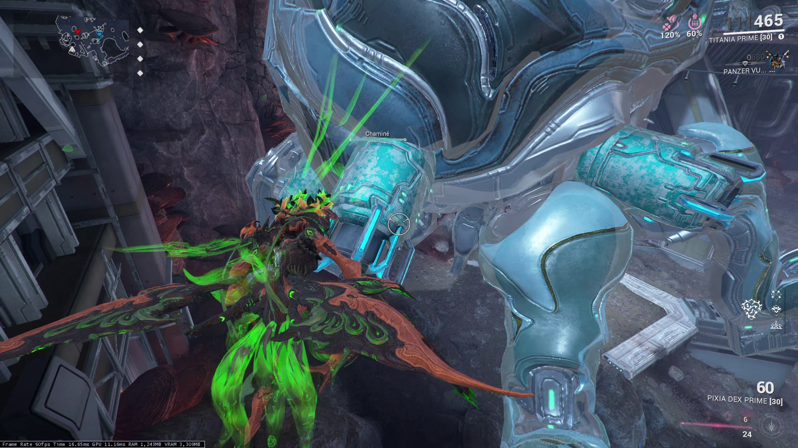
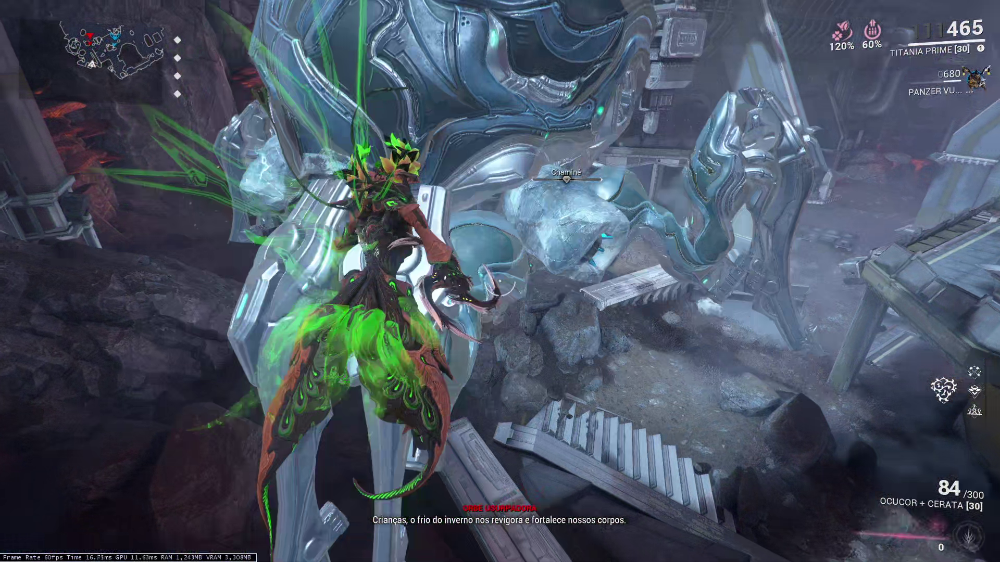
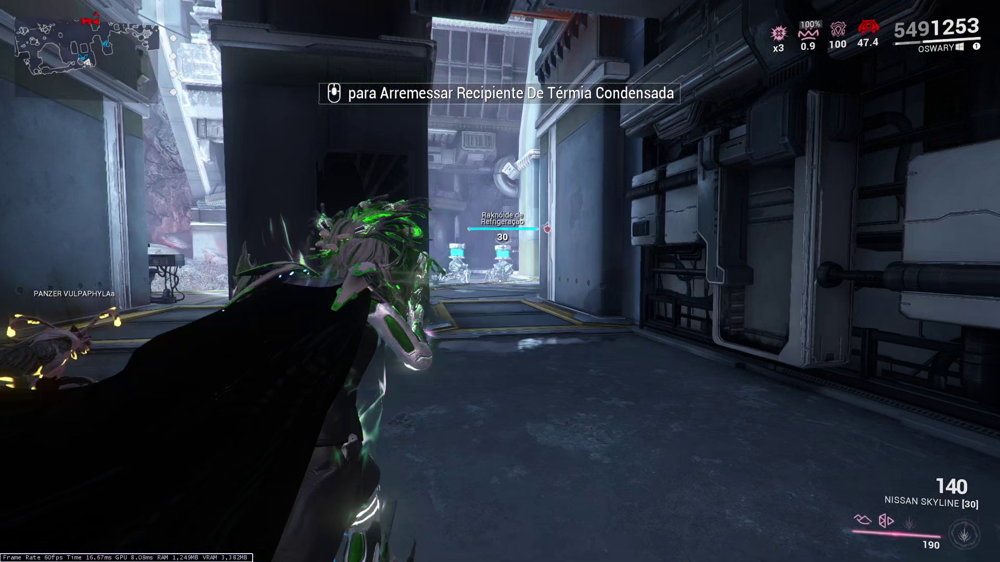

Como funciona?
Informações sobre conceitos e mecânicas dos embates contra o Usurpadora no Vallis Das Orbes.
O combate com a Usurpadora tem duas fases e segue a seguinte sequência:
Primeira Fase:
- Entrar no Convés 12.
- Ativar o Condensador de Térmia.
- Derrubar a Usurpadora.
- Destruir uma chaminé
- Descongelar e destruir outras duas chaminés.
- Descongelar e destruir a última chaminé.
Segunda Fase:
- Sair do Convés 12 e retornar à superfície.
- Provocar o Superaquecimento da Usurpadora.
- Expor e destruir seu ponto fraco.
- Repetir 3x.
Primeira Fase - Dentro do Convés 12
A primeira fase do combate ocorre dentro do Convés 12.
Iniciando o confronto
Ao entrar no Convés 12, nada irá acontecer. Você deve encontrar o Condensador de Térmia e inserir uma Térmia Diluída para iniciar o confronto.

Após a inserção da Térmia Diluída, a Usurpadora irá entrar no Convés 12 por uma abertura superior e ficará suspensa na arena, suportada por duas estruturas de pedra.
Destruindo as estruturas fará com que a Usurpadora caia no centro da arena.
Chaminés
A Usurpadora têm quatro chaminés em seu corpo, que são pontos fracos na primeira fase do combate.

Ao destruir a primeira chaminé, as outras três irão congelar, ficando invulneráveis a dano. Será então necessário utilizar Térmia Condensada para derreter o gelo.

Térmia Condensada
Recipientes de Térmia Condensada seráo dispejados em quatro locais distintos da arena periodicamente. É possível acompanhar o progresso da máquina visualmente.
Pegue um recipiente e utilize o disparo alternativo para arremessá-lo em direção às chaminés congeladas da Usurpadora.
Quanto mais próximo o recipiente explodir da chaminé, menos recipientes serão necessários:
- Acerto Direto: descongela imediatamente.
- Explosão próxima: São necessárias duas explosões próximas para descongelar completamente
- Explosão distante: São necessárias três explosões.
Após descongelar as chaminés, você pode destruí-las normalmente. Quando apenas uma chaminé estiver restante, a Usurpadora irá se mover e ficar em uma posição elevada. Nesta etapa, a Usurpadora irá contar com auxílio de Raknóides de Refrigeração. Continue com o procedimento de descongelar a última chaminé e destruí-la.

Com todas as chaminés destruídas, a Usurpadora ira deixar o Convés 12 e partirá para a superfície. Da mesma maneira, o jogador deve retornar a superfície pela mesma caverna utilizada na entrada. Ao sair para a superfície, será automaticamente iniciada a segunda fase da caçada.
Segunda Fase - Combate na Superfície
A segunda fase da caçada ocorre na superfície do Vallis das Orbes, logo em frente a caverna de entrada do Convés 12.
Superaquecimento
Com as chaminés destruídas, a Usurpadora fica suscetível a Superaquecimento. Entretanto, ela ainda conta com diversas mecânicas de resfriamento que buscam evitar o Superaquecimento.
Seu objetivo é se contrapor a estas mecânicas e buscar o Superaquecimento da Usurpadora, onde então ficará vulnerável e o jogador pode expor um de seus três pontos fracos por vez.
Raknóides de Refrigeração
Anteriormente uma mera incoveniência durante a primeira etapa, agora na segunda etapa as Raknóides de Refrigeração são um ponto crítico do combate. Elas irão nascer constantemente e correr em direção à Usurpadora, ativamente buscando auxiliá-la na refrigeração, regredindo o progresso de Superaquecimento.
Mate-as antes que cheguem próximas o suficiente da Usurpadora para impedir a refrigeração.
Quando uma Raknóide de Refrigeração for derrotada antes de refrigerar a Usurpadora com sucesso, irá deixar um recipiente no chão.
Fraturas de Térmia
Em determinados momentos durante o combate, a Usurpadora irá performar um ataque contra o chão buscando se resfriar. Este ataque irá criar diversas Fraturas de Térmia, também essenciais para a luta.
Com um Recipiente em mãos, ao se aproximar das Fraturas, você pode produzir um Recipiente de Térmia Condensada.
Arremessar Térmia Condensada contra a Usurpadora irá acelerar o processo de Superaquecimento e, caso consiga atirar no Recipiente no ar após arremessá-lo quando estiver próximo da Usurpadora, este acelero é dobrado.
Exposição dos pontos fracos
Quando a Usurpadora estiver Superaquecida, o jogador deve se aproximar dela, o que irá automaticamente acionar um evento onde o seu Warframe irá arrancar um pedaço da Usurpadora, expondo um ponto fraco. Ataque o ponto exposto.
Após certa quantidade de dano causada, a Usurpadora irá ficar invulnerável novamente. Então deverá ser repetido o processo de superaquecimento para expor o próximo ponto fraco. Esta sequência deve ser executada para um total de três pontos fracos.
Autodestruição
Após expor e causar dano em todos os três pontos fracos, a Usurpadora irá iniciar um processo de autodestruição. O jogador deve se afastar dela para evitar ser atingido pela explosão. O raio da explosão é de 300 metros, e irá causar dano em qualquer jogador dentro da área.